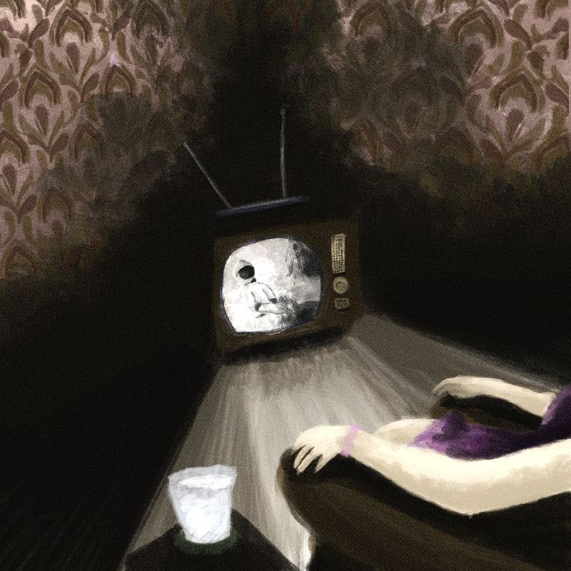

Creacover 2019 : J24
La musique du jour est Apollo de Kriki.
Excellente découverte. La musique dégage une certaine douceur; elle évoque le rêve, l’espoir, l’aventure spatiale (avec les voix à la radio, type années 60, le décompte, etc). Je perçois aussi une certaine tristesse. J’aime la tournure guillerette et entraînante que prend la mélodie à un moment donné, comme une note d’espoir envolée, pour retomber tout à coup dans cette peine mesurée, mais bien présente.
J’ai essayé de représenter cette ambiance années 60, conquête de l’espace, envie d’aventure et espoir de la réussite, en utilisant différentes teintes un peu vieillotes. Les motifs du papier peint et le modèle ancien de la télé contribuent également à rappeler l’époque. Pour montrer le côté triste, il y a cette opposition entre l’astronaute, à la télé, qui a vécu l’aventure, et la personne assise chez elle qui en est spectatrice, ou qui essaye de la vivre par procuration. Les paroles radio et les bruitages de la musique évoquent une explosion. On peut aussi imaginer que la mission Apollo n’est pas arrivée à son terme, que l’équipage n’a pas pu revenir sur Terre et que cette femme, assise dans son canapé, regarde les images de l’alunissage, seule étape réussie, pour oublier cette tragédie. Elle ne reverra jamais son époux, perdu à jamais dans l’espace. Il y a plusieurs interprétations possibles.
